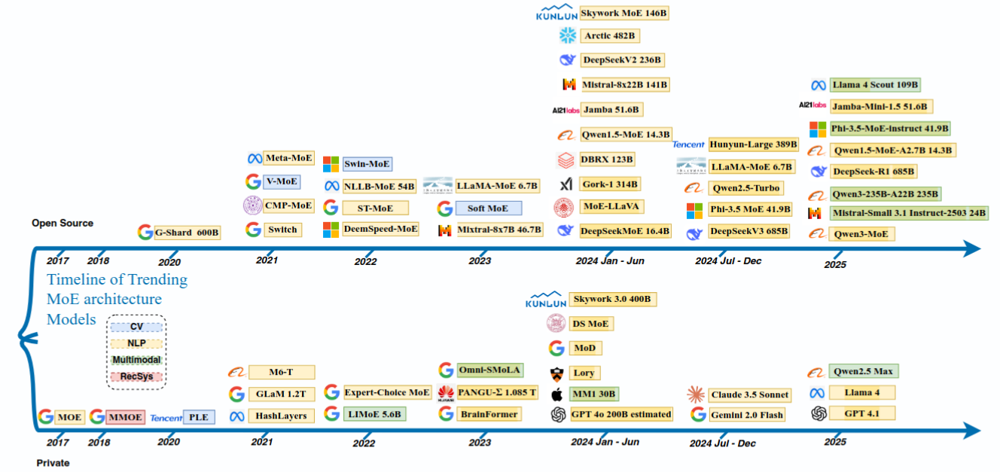
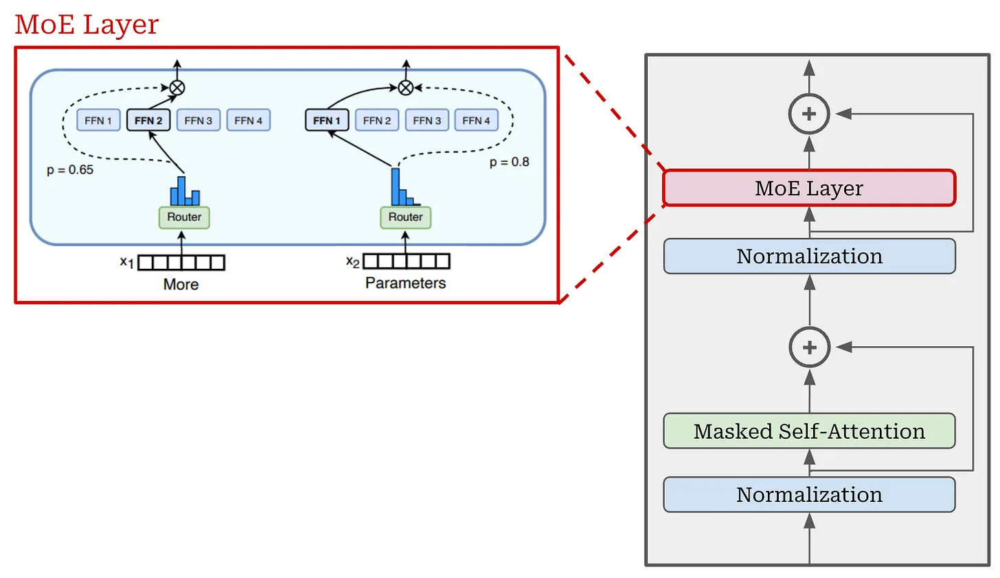
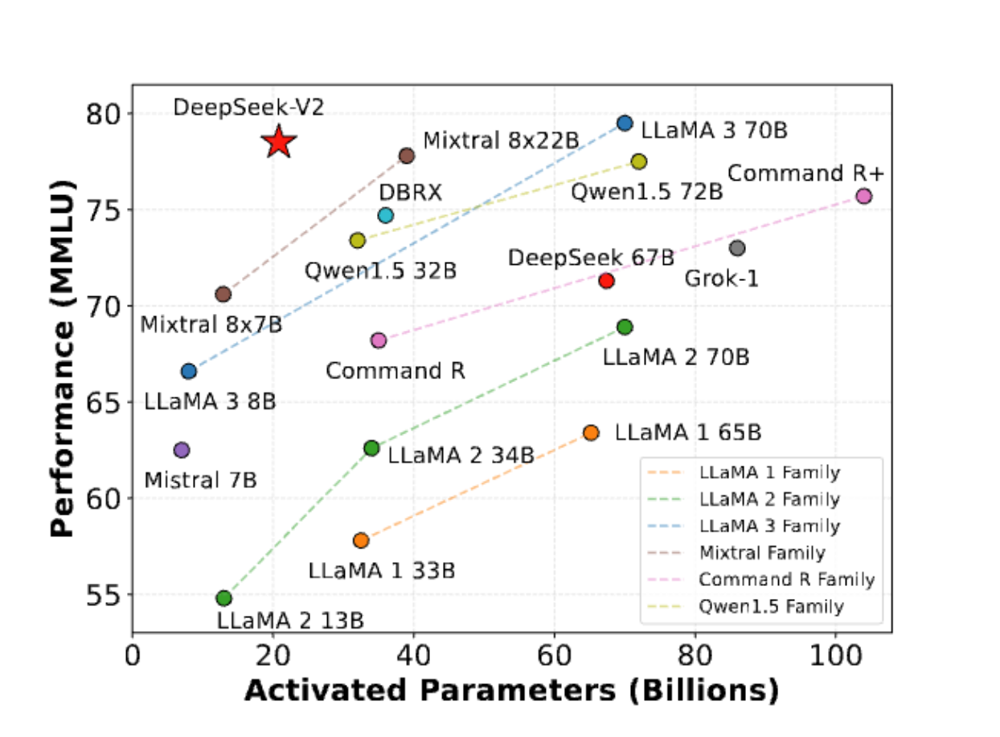
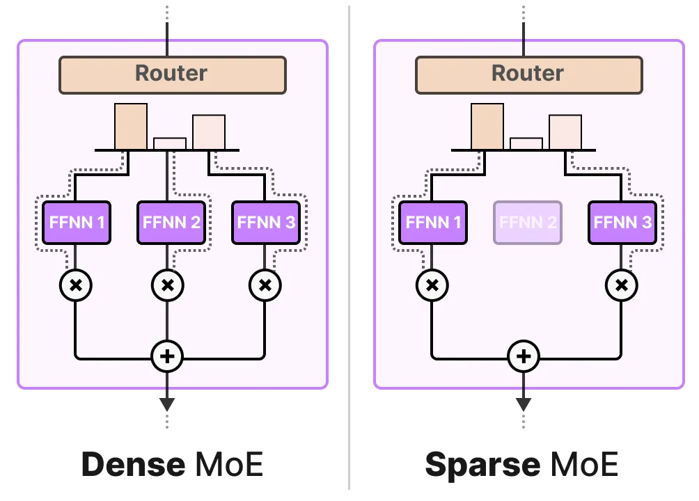
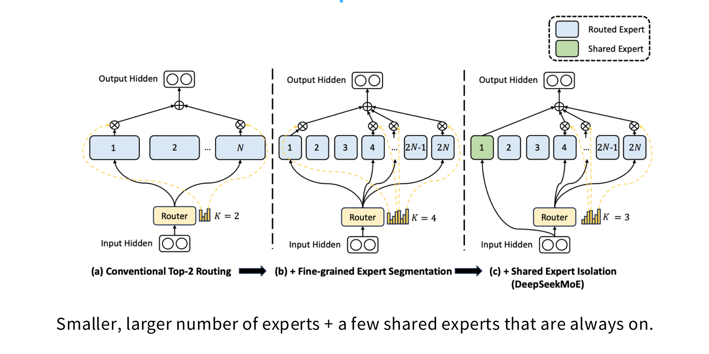
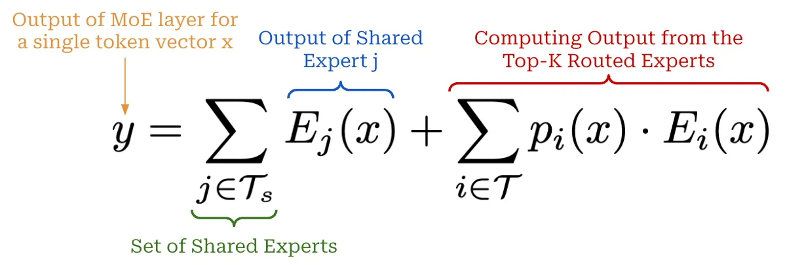
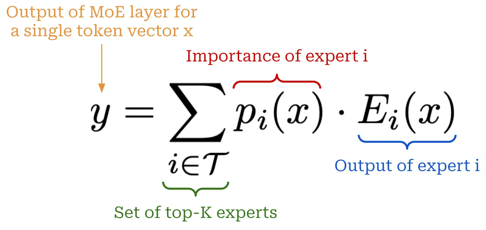
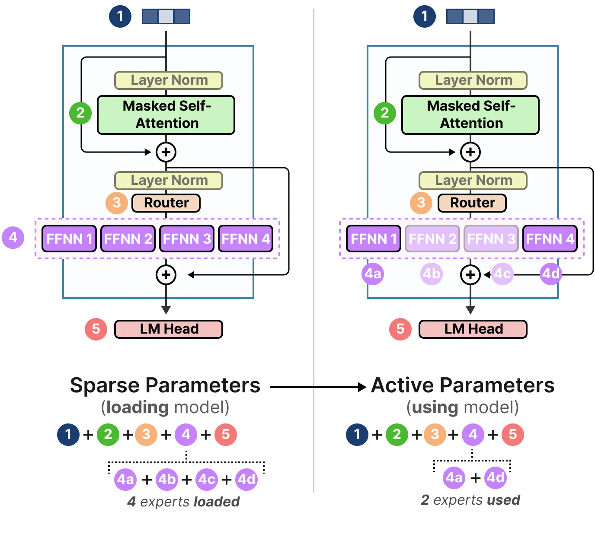
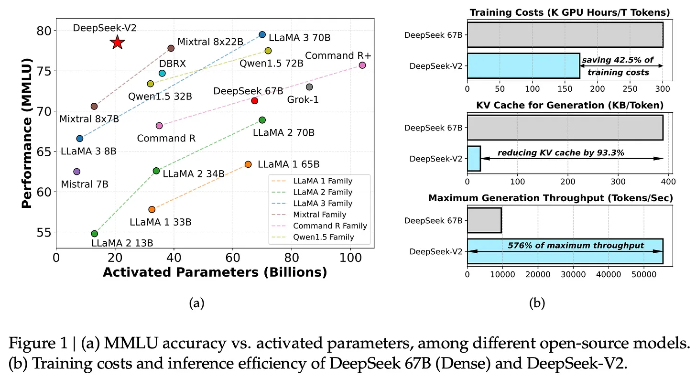

Slides
Overview
- Motivation
- MoE Architecture
- What do MoEs look like in LLMs?
- Dense vs Sparse MoE
- Routing Mechanisms
- Expert Configuration
- DeepSeek V3 MoE Architecture
Motivation

Decoder-only LLMs

- Decoder-only is the predominant architecture for LLMs
-
Core components
- Self-attention
- Feedforward (FFN)
- LayerNorm and residual connections
-
Most parameters are in the FFN layers
Decoder-only LLMs

- Most parameters are in the FFN layers
- The FFN layers are the main bottleneck for scaling up model capacity
- Increasing FFN size leads to quadratic growth in parameters and compute
MoE Architecture
- Replace big FFN with multiple smaller FFNs (experts)
- Only a subset of experts are active for each input token
- Routing mechanism decides which experts to activate
- Increase parameters without increasing compute

MoE Architecture
- All layers can be MoE
- Some layers (e.g., every 2nd layer) can be MoE in an interleaved fashion.
def moe_layer(token, experts, router, top_k):
# Ask the router "which experts should handle this token?"
logits = router(token)
# With N total experts, pick only top_k (top_k << N)
top_k_logits, top_k_experts = top_k(logits, top_k)
# Compute experts' mixing weights
weights = softmax(top_k_logits)
# Mix only top_k experts together to provide the final output
output = 0
for i, expert_idx in enumerate(top_k_experts):
output += weights[i] * experts[expert_idx](token)
return output
Why are MoEs getting popular?
-
Efficient Scaling: : Add model capacity (total parameters) without increasing active parameters (compute) significantly
-
Efficient Pretraining and Inference - Faster training and inference compared to dense models of similar capacity

Why are MoEs getting popular?
- Improved Performance: - Better performance on many tasks by leveraging specialization and ensemble effects
- DeepSeek V2 236B MoE with 21B active parameters outperforms dense models with 100B+ parameters

MoE Architectures
Three things vary across MoE architectures:
- Routing function - how tokens get assigned to experts
- Expert sizes - how many experts, how large each one is, shared vs routed
- Training objectives - how to train the router and keep experts balanced
Routing Mechanisms
- Token choice top K
- Expert choice top K
- Hash-based routing
- Learnable routing networks

Top-K routing in detail
1. Compute Gating Scores (e.g., dot product)
2. Select Top-K Experts

3. Compute Mixed Output
Top-K routing in more detail
Why not just softmax without top-K?
- You immediately lose the systems efficiency
- Without top-K, you pay the training cost of all N experts per token
- The whole point of MoE is sparse activation during both training and inference

Router Collapse
The Problem
-
Gating network routes tokens to only a small subset of experts
-
Leaves most experts underutilized or completely inactive
-
The "Rich-get-richer" effect: Specialized experts attract more tokens $\rightarrow$ get more gradients $\rightarrow$ become better $\rightarrow$ attract even more tokens
-
Degenerate policy: Router learns $s_{i,t} \approx 0$ for most experts
$$ \text{Effective capacity} \ll N \times \text{expert size} $$
Consequences
- Wasted memory: Unused experts consume GPU memory but add no value
- Reduced model quality: Equivalent to training a much smaller dense model
- Poor generalization: Active experts become overloaded and overfit
Mitigating Router Collapse
Strategies
-
Auxiliary Balancing Loss: Penalize uneven distribution (e.g., $F \cdot P$ loss)
-
Expert Capacity: Cap the tokens per expert per batch to force overflow
-
Random Noise: Add noise to router logits to encourage exploration
-
Expert Choice: Experts pick tokens (rather than tokens picking experts)
Expert Configuration
Fine-Grained Experts - Make experts smaller and use more of them. - Instead of $N$ full-sized FFN copies, make each expert much smaller (1/4 to 1/14 of standard FFN size)
The fine-grained ratio = (expert intermediate dim) / (standard FFN intermediate dim)

Expert Configuration
Shared Experts - One or more experts that process all tokens regardless of routing - Shared experts provide a common processing pathway for all tokens, ensuring that every token benefits from some shared knowledge. - Routed experts can specialize on different subsets of tokens. This hybrid approach can improve performance and stability.

Expert Configuration

Expert Routing Configurations for Major MoEs
| Model | Routed | Active | Shared | Fine-grained ratio |
|---|---|---|---|---|
| GShard | 2048 | 2 | 0 | -- |
| Switch Transformer | 64 | 1 | 0 | -- |
| Mixtral | 8 | 2 | 0 | -- |
| DBRX | 16 | 4 | 0 | -- |
| Grok | 8 | 2 | 0 | -- |
| DeepSeek V1 | 64 | 6 | 2 | 1/4 |
| Qwen 1.5 | 60 | 4 | 4 | 1/8 |
| DeepSeek V3 | 256 | 8 | 1 | 1/14 |
| OLMoE | 64 | 8 | 0 | 1/8 |
| MiniMax | 32 | 2 | 0 | ~1/4 |
| Llama 4 (Maverick) | 128 | 1 | 1 | 1/2 |
Training MoEs
The Core Challenge
- Sparsity vs. Differentiability: We need sparsity for training-time efficiency.
- Problem: Sparse gating decisions (hard top-K selection) are not differentiable.
- Gradient descent cannot directly optimize the discrete "choice" of an expert.
The Efficiency Trade-off
- Activating all experts simplifies gradients but destroys compute efficiency.
- FLOPs Cost: "Having a model that's 256 times more expensive to train is a total no-go."
- Goal: Maintain sparse execution while ensuring the routing mechanism can still be trained effectively.
Heuristic Balancing Losses
Switch Transformer F*P Loss (Standard)

where: - $f_i = \frac{1}{T} \sum_{x \in \mathcal{B}} \mathbb{1}{\text{argmax } p(x) = i}$ is the fraction of tokens dispatched to expert $i$ - $P_i = \frac{1}{T} \sum_{x \in \mathcal{B}} p_i(x)$ is the mean router probability for expert $i$ - $\alpha$ is the balancing coefficient - $N$ is the number of experts
Expert Capacity
Hardware Efficiency vs. Dynamic Routing
Expert Capacity: The maximum number of tokens assigned to each expert per batch.
$$ \text{Expert Capacity} = \frac{\text{Tokens per Batch}}{\text{Number of Experts}} \times \text{Capacity Factor} $$

Handling Overflow (Dropped Tokens)
- Token Dropping: Occurs when the number of tokens routed to an expert exceeds its capacity.
- Residual Bypass: Dropped tokens skip expert computation and flow directly through the residual connection to the next layer.
Computing output of MoE layer
-
For each selected expert, compute the output for the assigned tokens
-
Combine the outputs from the selected experts (e.g., weighted sum) and add the residual connection

Total vs Activate Parameters
- Total Parameters: The entire set of model parameters, including all available experts (both active and inactive).
- Active Parameters: The parameters actually triggered to process a single input token. This determines the compute cost (FLOPs) per token.
- Key Advantage: MoEs scale model capacity (Total) while maintaining the inference latency and training cost of a much smaller dense model (Active).

Total vs Activate Parameters
Mixtral 8x7B MoE

- Total Parameters: ~46.7B
- Active Parameters: ~12.9B
- Configuration:
- 8 experts per layer
- Top-2 gating ($K=2$ experts active per token)
- Parameter Sharing:
- Only the Feed-Forward Network (FFN) blocks are replicated.
- Shared components: Attention layers, LayerNorms, and Embeddings.
$$ \text{Active Params} = \text{Shared} + (K \times \text{Expert FFN}) $$ $$ \text{Total Params} = \text{Shared} + (N \times \text{Expert FFN}) $$

DeepSeek V3 MoE
DeepSeek V2
- a 236 billion parameter MoE with 21 billion active parameters

DeepSeek V3 - a 671B parameter MoE with 37B active parameters
DeepSeek V3 Architecture

- Sparse Activation: 671B total parameters, only 37B active per token
- Shared + Routed Experts: Combines fine-grained routed experts (256) with 1 shared expert, 8 activated experts processing all tokens
- Multi-Head Latent Attention (MLA): Compresses KV cache into latent space, synergizes with sparse MoE for efficient inference
- Multi-Token Prediction: Jointly optimizes predicting multiple tokens in parallel for improved coherence and throughput